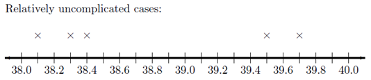
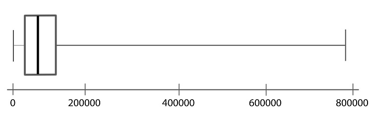
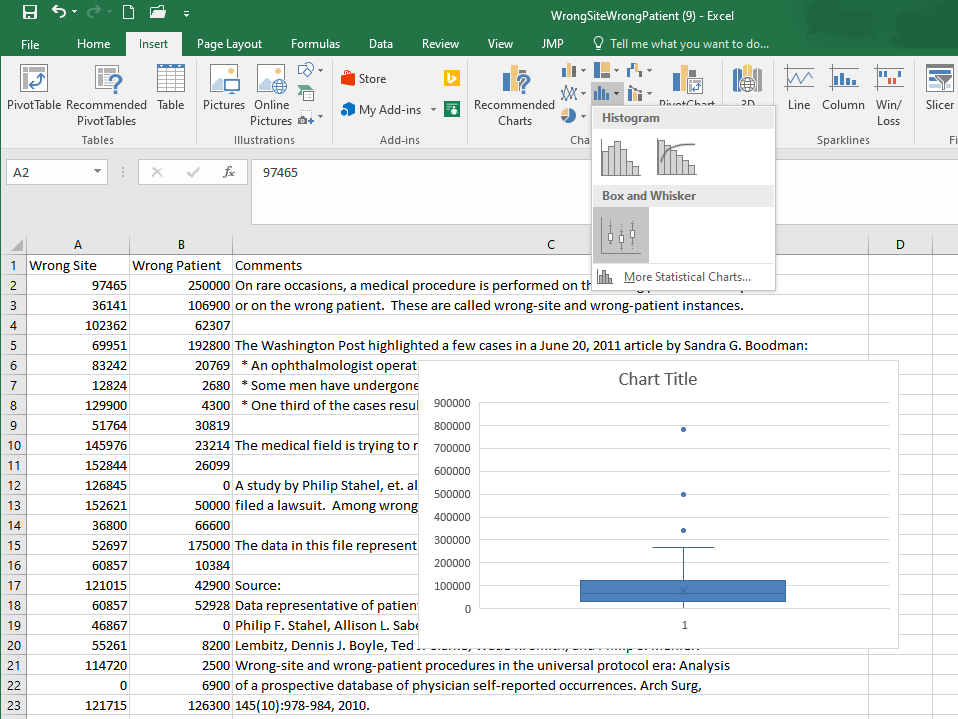
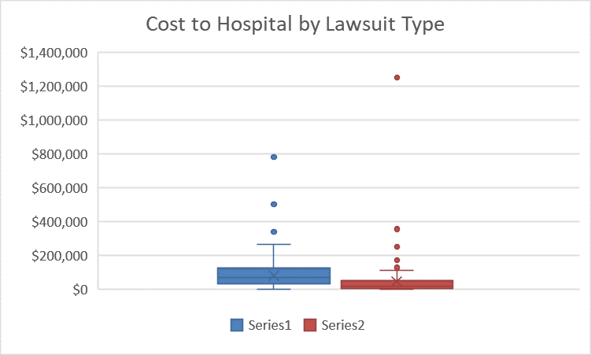

Lesson 4: Describing Quantitative Data (Spread)
Spread of a Distribution
In the previous lesson, we introduced two important characteristics of a distribution: the shape and the center. In this section, you will discover ways to summarize the spread of a distribution of data. The spread of a distribution of data describes how far the observations tend to be from each other. There are many ways to describe the spread of a distribution, but one of the most popular measurements of spread is called the “standard deviation.”
Standard Deviation and Variance
This activity introduces two measures of spread: the standard deviation and the variance.

Bird Flu Fever

Avian Influenza A H5N1, commonly called the bird flu, is a deadly illness that is currently only passed to humans from infected birds. This illness is particularly dangerous because at some point it is likely to mutate to allow human-to-human transmission. Health officials worldwide are preparing for the possibility of a bird flu pandemic.

Dr. K. Y. Yuen led a team of researchers who reported the body temperatures of people admitted to Chinese hospitals with confirmed cases of Avian Influenza. Their research team collected data on the body temperature at the time that people with the bird flu were admitted to the hospital. In the article, they reported on two groups of people, those with relatively uncomplicated cases of the bird flu and those with severe cases.

The table below presents the data representative of the body temperatures for the two groups of bird flu patients:
| Relatively Uncomplicated Cases | Severe Cases |
|---|---|
| 38.1 | 39.1 |
| 38.3 | 39.5 |
| 38.4 | 38.9 |
| 39.5 | 39.2 |
| 39.7 | 39.9 |
| 39.7 | |
| 39.0 |

Let us focus on the relatively uncomplicated cases. Creating a histogram of such a small dataset does not provide much benefit. With only a handful of values, there is not much shape to the distribution.
We can, however, use numerical summaries to give an indication of the center of the distribution.
- What is the median of the body temperatures for the relatively uncomplicated cases?
- What is the mean of the body temperatures for the relatively uncomplicated cases?
We will use these data to investigate some measures of the spread in a data set.
There is relatively little difference in the temperatures of the uncomplicated patients. The lowest is \(38.1 ^\circ \text{C}\), while the highest temperature is \(39.7 ^\circ \text{C}\).
The standard deviation is a measure of the spread in the distribution. If the data tend to be close together, then the standard deviation is relatively small. If the data tend to be more spread out, then the standard deviation is relatively large.
The standard deviation of the body temperatures is \(0.742 ^\circ \text{C}\). This number contains information from all the patients. If the patients’ temperatures had been more diverse, the standard deviation would be larger. If the patients’ temperatures were more uniform (i.e. closer together), then the standard deviation would have been smaller. If all the patients somehow had the same temperature, then the standard deviation would be zero.
We are working with a sample. To be explicit, we call \(0.742 ^\circ \text{C}\) the sample standard deviation. The symbol for the sample standard deviation is \(s\). This is a statistic. The parameter representing the population standard deviation is \(\sigma\) (pronounced /SIG-ma/). In practice, we rarely know the value of the population standard deviation, so we use the sample standard deviation \(s\) as an approximation for the unknown population standard deviation \(\sigma\).
At this point, you probably do not have much intuition regarding the standard deviation. We will use this statistic frequently. By the end of the semester you can expect to become very comfortable with this idea. For now, all you need to know is that if two variables are measured on the same scale, the variable with values that are further apart will have the larger standard deviation.
To calculate the sample standard deviation in Excel, follow these steps:
- In a blank cell, type “=stdev.s(”
- Highlight the data (the cell range reference will be added to your formula)
- Close the parenthesis with “)” and hit enter
Calculating the Standard Deviation by Hand
How is the standard deviation computed? Where does this “magic” number come from? How does one number include the information about the spread of all the points?
It is a little tedious to compute the standard deviation by hand. You will usually compute standard deviation with a computer. However, the process is very instructive and will help you understand conceptually what the statistic represents. As you work through the following steps, please remember the goal is to find a measure of the spread in a data set. We want one number that describes how spread out the data are.
First, observe the number line below, where each x represents the temperature of a patient with a relatively uncomplicated case of bird flu. As mentioned earlier, there is not a huge spread in the temperatures.

On your sketch of the number line, we draw a vertical line at 38.8 degrees, the sample mean. Now, draw horizontal lines from the mean to each of your \(\times\)’s. These horizontal line segments represent the spread of the data about the mean. Your plot should look something like this:

The length of each of the line segments represents how far each observation is from the mean. If the data are close together, these lines will be fairly short. If the distribution has a large spread, the line segments will be longer. The standard deviation is a measure of how long these lines are, as a whole.
The distance between the mean and an observation is referred to as a deviation. In other words, deviations are the lengths of the line segments drawn in the image above.
\[ \begin{array}{1cl} \text{Deviation} & = & \text{Value} - \text{Mean} \\ \text{Deviation} & = & x - \bar x \end{array} \]
If the observed value is greater than the mean, the deviation is positive. If the value is less than the mean, the deviation is negative.
The standard deviation is a complicated sort of average of the deviations. Making a table like the one below will help you keep track of your calculations. Please participate fully in this exercise. Writing your answers at each step and developing a table as instructed will greatly enhance the learning experience. By following these steps, you will be able to compute the standard deviation by hand, and more importantly, understand what it is telling you.
Step 01: The first step in computing the standard deviation by hand is to create a table, like the following. Enter the observed data in the first column.
|
Observation (\(x\)) |
Deviation from the Mean (\(x-\bar x\)) |
|---|---|
|
\(38.1\) |
\(38.1-38.8=-0.7\) |
|
\(38.3\) |
|
|
\(38.4\) |
|
|
\(39.5\) |
|
|
\(39.7\) |
|
|
\(\bar x = 38.8\) |
Step 02: The second column of the table contains the deviations from the mean. Complete column 2 of the table above.
Check Results for Step 2- How could we use this table to find the “typical” distance from each point to the mean? Think carefully about this, and then write down your answer before continuing.
- We need a way to work with the negative deviations from the mean, so they do not cancel with the positive ones. What could we do? (Choose one of the four options below.)
- Please do not go on to Step 03 until you have finished this exploration.

Step 03: Add a third column to your table. To get the values in this column, square the deviations from the mean that you found in Column 2.
Click Here for a Blank Table Check Results for Step 03Step 04: Now, add up the squared deviations from the mean.
Check Results for Step 04- Suppose that the researchers had collected body temperature data on 500 bird flu patients instead of 5. What would happen to the sum of the squared deviations, if the distribution of the data is the same for the 500 patients as the 5 patients?
- What could we do to make sure the sample size does not inflate our estimate of the spread of the data?
- Please do not go on until you have finished this exercise.
Step 05: Divide the sum of the squared deviations by \(n - 1\). Write this value at the bottom of Column 3 of your table.
The number you computed in Step 05 is called the sample variance. It is a measure of the spread in a data set. It has very nice theoretical properties. The variance plays an important role in Statistics. We denote the sample variance by the symbol \(s^2\).
It can be shown that the sample variance is an unbiased estimator of the true population variance (which is denoted \(\sigma^2\).) This means that the sample variance can be considered a reasonable estimator of the population variance. If the sample size is large, this estimator tends to be very good.
Check the Results for Step 05- The temperature data for the bird flu patients are in degrees Centigrade. What are the units of the variance?
- What operation can we do to the variance to get a quantity with units degrees Centigrade?
Step 06: Take the square root of the sample variance to get the sample standard deviation.
The sample standard deviation is defined as the square root of the sample variance.
\[\text{Sample Standard Deviation} = s = \sqrt{ s^2 } = \sqrt{\strut\text{Sample Variance}}\]
The standard deviation has the same units as the original observations. We use the standard deviation heavily in statistics.
The sample standard deviation (\(s\)) is an estimate of the true population standard deviation (\(\sigma\)).
- What is the sample standard deviation, \(s\), of the temperatures of the five patients with relatively uncomplicated cases of the bird flu?
Summary
Standard Deviation
The standard deviation is one number that describes the spread in a set of data. If the data points are close together the standard deviation will be smaller than if they are spread out.
At this point, it may be difficult to understand the meaning and usefulness of the standard deviation. For now, it is enough for you to recognize the following points:
- The standard deviation is a measure of how spread out the data are.
- If the standard deviation is large, then the data are very spread out.
- If the standard deviation is zero, then all the values are the identical–there is no spread in the data.
- The standard deviation cannot be negative.
Variance
The variance is the square of the standard deviation. The sample variance is denoted by the symbol \(s^2\). You found the sample standard deviation for patient temperatures of uncomplicated cases of bird in the bird above is \(s = 0.74162\). So, the sample variance for this data set is \(s^2 = 0.74162^2 = 0.550\). Be aware, if you had squared the rounded value of \(s^2 = 0.742\) in the calculation, you would have gotten an answer of 0.551 instead. This would be considered incorrect!
To calculate the sample variance in Excel:
- In a blank cell, type “=var.s(”
- Highlight the data (the cell range reference will be added to your formula)
- Close the parenthesis with “)” and hit enter
The standard deviation and variance are two commonly used measures of the spread in a data set. Why is there more than one measure of the spread? The standard deviation and the variance each have their own pros and cons.
The variance has excellent theoretical properties. It is an unbiased estimator of the true population variance. That means that if many, many samples of \(n\) observations were drawn, the variances computed for all the samples would be centered nicely around the true population variance, \(\sigma^2\). Because of these benefits, the variance is regularly used in higher-level statistics applications. One drawback of the variance is that the units for the variance are the square of the units for the original data. In the bird flu example, the body temperatures were measured in degrees Centigrade. So, the variance will have units of degrees Centigrade squared \((^\circ \text{C})^2\). What does degrees Centigrade squared mean? How do you interpret this? It doesn’t make any sense. This is one of the major drawbacks of the sample variance.
Because we take the square root of the variance to get the standard deviation, the standard deviation is in the same units as the original data. This is a great advantage, and is one of the reasons that the standard deviation is commonly used to describe the spread of data.
Enter the patient temperature data for the severe cases of bird flu into Excel. Then use Excel to calculate the numerical summaries you have learned so far. As a reminder, the temperatures of patients with a severe case of bird flu are:
- What is the mean, median, standard deviation and variance of the sample?

For the next two questions, consider the histograms below comparing weight (in kilograms) of men (top histogram) to elephant seals (bottom histogram).
Weight of Men Compared to Weight of Seals

- Based on the histograms, who has a greater sample mean weight, men or elephant seals?
- Based on the histograms, do the weights of men or elephant seals have a larger sample standard deviation?
Review of Parameters and Statistics
We have now learned some statistics that can be used to estimate population parameters. For example, we use \(\bar x\) to estimate the population mean \(\mu\). The sample statistics \(s\) estimates the true population standard deviation \(\sigma\). The following table summarizes what we have done so far:
|
Sample Statistic |
Population Parameter |
|
|---|---|---|
|
Mean |
\(\bar x\) |
\(\mu\) |
|
Standard Deviation |
\(s\) |
\(\sigma\) |
|
Variance |
\(s^2\) |
\(\sigma^2\) |
|
\(\vdots\) |
\(\vdots\) |
\(\vdots\) |
Unless otherwise specified, we will always use Excel to find the sample variance and sample mean. In each case, the sample statistic estimates the population parameter. The ellipses \(\vdots\) in this table hint that we will add rows in the future.
Optional Reading: Formulas for \(s\) and \(s^2\) (Hidden)
Click Here if you love MathNeither the standard deviation nor the variance is resistant to outliers. This means that when there are outliers in the data set, the standard deviation and the variance become artificially large. It is worth noting that the mean is also not resistant. When there are outliers, the mean will be “pulled” in the direction of the outliers.
The mean and standard deviation are used to describe the center and spread when the distribution of the data is symmetric and bell-shaped. If data are not symmetric and bell-shaped, we typically use the five-number summary (discussed below) to describe the spread, because this summary is resistant.
Additional Tools to Describe the Data
Recall the five steps of the Statistical Process (and the mnemonic "Daniel Can Discern More Truth).
|
Step 1: |
Daniel |
Design the study |
|
Step 2: |
Can |
Collect data |
|
Step 3: |
Discern |
Describe the data |
|
Step 4: |
More |
Make inferences |
|
Step 5: |
Truth |
Take action |
Step 3 of this process is “Describe the data.” You have already learned about the mean, median, mode, standard deviation, variance and histograms. These can be good ways to describe the data. The following information on percentiles, quartiles, 5-number summaries, and boxplots will help you learn other common ways to describe data, especially if the data are skewed or contain outliers.
For symmetric, bell-shaped data, the mean and standard deviation provide a good description of the center and shape of the distribution. The mean and standard deviation are not sufficient to describe a distribution that is skewed or has outliers. An outlier is any observation that is very far from the others. The mean is pulled in the direction of the outlier. Also, the standard deviation is inflated by points that are very far from the mean.
Now, you have probably had some experience with percentiles in the past especially when you received a score on a standardized test such as the ACT. Even though percentiles are commonly used, they are generally misunderstood. Before examining the wrong site/wrong patient data, let’s review percentiles. Even if you think you understand percentiles, please study this section carefully.
Percentiles and Quartiles
Imagine a very long street with houses on one side. The houses increase in value from left to right. At the left end of the street is a small cardboard box with a leaky roof. Next door is a slightly larger cardboard box that does not leak. The houses eventually get larger and more valuable. The rightmost house on the street is a huge mansion.
- There are 100 homes with increasing property values. How many fences are needed to separate the 100 properties?
The home values are representative of data. If we have a list of data, sorted in increasing order, and we want to divide it into 100 equal groups, we only need 99 dividers (like fences) to divide up the data. The first divider is as large or larger than 1% of the data. The second divider is as large or larger than 2% of the data, and so on. The last divider, the 99th, is the value that is as large or larger than 99% of the data. These dividers are called percentiles. A percentile is a number such that a specified percentage of the data are at or below this number. For example, the 99th percentile is a number such that 99% of the data are at or below this value. As another example, half (50%) of the data lie at or below the 50th percentile. The word percent means \(\div 100\). This can help you remember that the percentiles divide the data into 100 equal groups.
Quartiles are special percentiles. The word quartile is from the Latin quartus, which means “fourth.” The quartiles divide the data into four equal groups. The quartiles correspond to specific percentiles. The first quartile, Q1, is the 25th percentile. The second quartile, Q2, is the same as the 50th percentile or the median. The third quartile, Q3, is equivalent to the 75th percentile.
Wrong Site/Wrong Patient Lawsuits
Percentiles can be used to describe the center and spread of any distribution and are particularly useful when the distribution is skewed or has outliers. To explore this issue, you will use software to calculate percentiles of data on costs incurred by hospitals due to certain lawsuits. The lawsuits in question were about surgeries performed on the wrong patient, or on the right patient but the wrong part of the patient’s body (the wrong site).
To calculate percentiles and quartiles in Excel, do the following
Open the data file you are using. For this example, open the file WrongSiteWrongPatient.xlsx.
You will use Excel’s percentile (inclusive) function: =percentile.inc()
This Excel function requires two inputs (or arguments), separated by a comma. The first input is the cell range reference. The second input is the desired percentile.
The wrong-site data in the file ranges from row 2 to row 412 in column A. So, to calculate the 25th percentile of the wrong site data you should enter the following formula in a blank cell somewhere in the file:
You may notice that some of the values for percentiles given in Excel are different from those given in other softwares. This is due to the slightly different ways in which percentiles can be calculated. In this course, be sure to use the percentiles that come from Excel’s percentile.inc() function.
The first quartile (\(Q_1\)) or 25th percentile (calculated in Excel) of the wrong-site data is: $29,496. (This result is illustrated in the figure below.) This means that 25 percent of the time hospitals lost a wrong-site lawsuit, they had to pay $29,496 or less. The 25th percentile can be written symbolically as: P25 = $29,496. Other percentiles can be written the same way. The 99th percentile can be written as P99.
| 1st percentile | 0 |
| 2nd percentile | 0 |
| 3rd percentile | 0 |
| … | … |
| 24th percentile | 28633.4 |
| 25th percentile | 29496 |
| 26th percentile | 31067 |
- What is the 13th percentile of the wrong site data?
- How would you interpret the 13th percentile (assuming the 13th percentile is $6343.40)?
- 100 of the lawsuits cost more than 13%.
- 13% of the lawsuits cost the hospital over $6343.40.
- In 13% of the wrong-site lawsuits, hospitals had to pay $6343.40 or less.
- For 13% of the wrong-site lawsuits, the hospitals had to pay $6343.40 to the patient.
- Find P90.
- The quartiles divide a sorted list of data into four equal groups. So, each group contains 25% of the data. The first quartile is the value that is greater than or equal to 25% of the data. What is another name for this number?
- What is the value of the third quartile?
- Half of the wrong-site lawsuits judgments were less than or equal to what value?
- The median is the middle observation in a sorted list of data. What percentile is always equal to the median?
The Five-Number Summary
Another way to summarize data is with the five-number summary. The five-number summary is comprised of the minimum, the first quartile, the second quartile (or median), the third quartile, and the maximum.
Statistical packages can give different results for some computations. This is because there are several reasonable ways to define certain quantities, such as the quartiles. As such, you may find that some of the values that are given in Excel are different than what other software may give.
To find the values for a five-number summary in Excel, do the following
Open the data file you are using. For this example, open the file WrongSiteWrongPatient.xlsx.
You can use the function =percentile.inc() in Excel to find the 1st quartile, median and 3rd quartile (otherwise known as the 25th, 50th, and 75th percentiles respectively).
Type the following into a blank cell of the WrongSiteWrongPatient.xlsx worksheet
- to find the minimum wrong-site value: =min(A2:A412)
- to find the maximum wrong-site value: =max(A2:A412)
Boxplots
A boxplot is a graphical representation of the five-number summary. Unlike the mean or standard deviation, a boxplot is resistant to outliers. That means that it won’t be “pulled” one way or the other by extraordinarily large or small values in the data as will a mean, for instance. We will illustrate the process of making a boxplot using the wrong-site data.
Follow the steps below to learn how a boxplot relates to the five-number summary. Learning what each part of the boxplot represents will enable you to interpret the plot correctly.
Step 01: To draw a boxplot, start with a number line.

Step 02: Draw a vertical line segment above each of the quartiles.

Step 03: Connect the tops and bottoms of the line segments, making a box.

Step 04: Make a smaller mark above the values corresponding to the minimum and the maximum.

Step 05: Draw a line from the left side of the box to the minimum, and draw another line from the right side of the box the maximum.

Step 06: These last two lines look like whiskers, so this is sometimes called a box-and-whisker plot.

To create a boxplot in Excel, do the following
Open the data file you are using. For this example, open the file WrongSiteWrongPatient.xlsx.
Highlight the data you want to plot (in this case, cells A2 to A412 contain the wrong-site lawsuit data).
Go to the Insert ribbon in Excel and select the histogram icon from the “Charts” section of the ribbon. Then select the only option under the Box and Whisker category. 
- Create a histogram of the wrong-patient lawsuit data, located in column B of the file WrongSiteWrongPatient.xlsx. What is the shape of the wrong-patient data?
- Skewed left
- Symmetric
- Skewed right
- Multi-modal
- Uniform

- Create a boxplot of the wrong-patient lawsuit data.
Side-by-side boxplots are a powerful way to compare data from different samples visually. For example, we may be interested in comparing the results of wrong-site lawsuits and wrong-patient lawsuits.

In the plot we can quickly see that a wrong-patient lawsuit resulted in the largest cost to the hospital, more than $1.2 million. However, in general, wrong-patient lawsuits tend to result in a lower cost to the hospital than wrong-site lawsuits.
To create side-by-side boxplots in Excel, do the following
Open the data file you are using. For this example, open the file WrongSiteWrongPatient.xlsx. Since these two datasets are next to each other in the file, the easiest way to create side-by-side boxplots plots is to highlight both columns of data. Then follow the same steps as for a single boxplot.
To make a side-by-side boxplot plot easier to understand you can add a legend. This is most easily done by clicking the green ‘+’ near the upper right corner of the plot that appears when the plot is selected. Then, in the menu that appears, ensure the “legend” box is checked.
Alternatively, if the green ‘+’ is not visible to you, follow these steps shown in the image below. After selecting the plot go to the Design ribbon and select Add Chart Element. In the menu that appears select Legend, and then choose where you would like the legend to appear on the plot, as shown below.

Additional formatting can be applied to further improve the appearance of the chart.
Summary
The standard deviation is a number that describes how spread out the data are. A larger standard deviation means the data are more spread out than data with a smaller standard deviation.
Quartiles/percentiles, Five-Number Summaries, and Boxplots are tools that help us understand data. The five-number summary of a data set contains the minimum value, the first quartile, the median, the third quartile, and the maximum value. A boxplot is a graphical representation of the five-number summary.
Copyright © 2020 Brigham Young University-Idaho. All rights reserved.